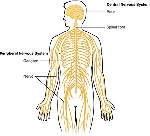

Different body system
- Respiratory system
- The respiratory system (also respiratory apparatus, ventilatory system) is a biological system consisting of specific organs and structures used for gas exchange in animals and plants.
- The lung provides the tissues of the human body with a continuous flow of oxygen and clears the blood of the gaseous waste product, carbon dioxide.
- Central nervous system
- The central nervous system (CNS) is the mastermind of the body, controlling all its functions and responses.
- The central nervous system is the part of the nervous system consisting primarily of the brain and spinal cord.
- Reproductive system
- The reproductive system of an organism, also known as the genital system, is the biological system made up of all the anatomical organs involved in sexual reproduction.
- During copulation, a male gamete sperm enters the fallopian tube and fuses with a female gamete ovum, leading to a formation of a diploid zygote. The cells of the zygote divide repeatedly as the zygote moves down the fallopian tube to the uterus. The formed embryo implants to the wall of the uterus and grows in the uterus during pregnancy.


